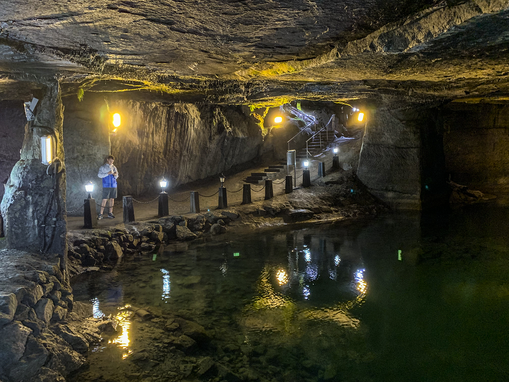
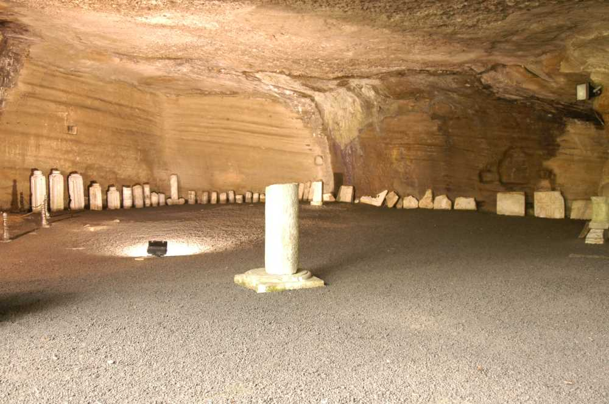

Cehennem Ağzı Mağarası
Cehennemağzı Mağaraları yan yana üç mağaradan oluşmaktadır. Mitolojik öykü ve efsaneleri ile tarih kitaplarında da yer alan bu mağaralardan toplam uzunluğu 85 m. olan Kocayusuf (asıl Cehennemağzı Mağarası), içinde büyük bir göl ve işlenmiş yerlikaya sütunları bulunan geniş bir mağaradır. Mitolojide yeraltı tanrısı Hades’in ülkesine açılan mağara olarak kabul edilen Kocayusuf’un kuzey kenarında, tek bir salondan meydana gelen ve tabanı mozaiklerle kaplı olan Kilise Mağarası yer alır. Hristiyanların ibadet yeri olarak kullanılan bu mağaranın yan duvarlarında kandil yuvaları vardır. Kocayusuf’un güneyinde ise Ayazma Mağarası bulunur.
Günümüzde değişik amaçlı gösteriler (konser, konferans, sergi vb.) düzenlenen ve sonunda göl bulunan bu mağaranın toplam uzunluğu 103 m.’dir. Batılı kaynaklarda Acheron Mağaraları olarak tanınan Cehennemağzı Mağaraları; tarihi ve mitolojik dokularının yanı sıra doğal çevresinin zenginliği; inanç ve kültür turizmi için büyük bir poatansiyel oluşturmakta ve bu özellikleriyle de rağbet gören önemli bir mekandır. Mağaralarda yeterli aydınlatma bulunmaktadır.
 